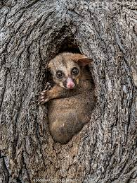
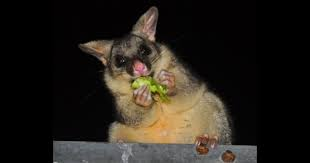
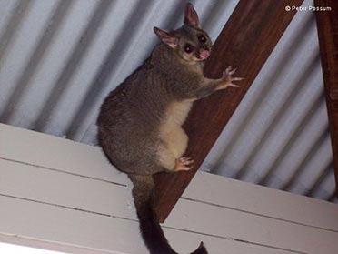
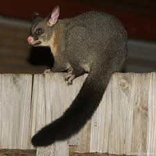
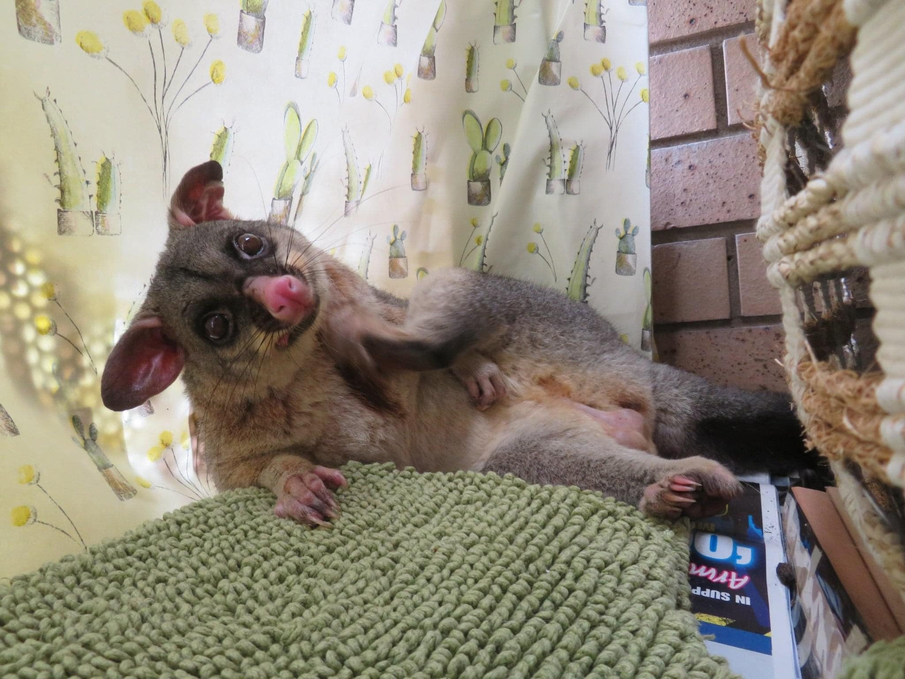

Meet the Australian Brushtail Possum!
This fluffy, big-eyed animal lives in Australia. It comes out at night to look for food. Possums are great climbers and can live in forests AND in cities!
🌿 Where They Live
Possums live in trees, forests, and even in people's rooftops! Find out where they call home.
🍃 What They Eat
Possums munch on leaves, fruit, and flowers! Learn all about their favorite foods.
👶 Baby Possums!
Baby possums are called joeys. They grow in their mom's pouch. Learn how!
🦘 What They Do
Possums sleep all day and come out at night. Find out what they do after dark!
Fun Facts!
- Science Name: Trichosurus vulpecula — that means "hairy-tailed little fox"!
- Size: About as long as your arm (35–55 cm), plus a long fluffy tail
- Weight: About as heavy as a big bag of apples (1.5–4.5 kg)
- How Long They Live: 6 to 13 years in the wild
- Are They in Danger? No — there are lots of them in Australia!
- Coolest Feature: Their bushy tail can grab branches like a hand!
Photo Gallery
Check out these amazing possum photos! You'll see them in trees, eating, riding on their moms, and more. Click any photo to see it up close!

Possum in a Tree Hollow
Click to see the full photo and learn more →

Eating at Night
Click to see the full photo and learn more →

Mom and Her Baby
Click to see the full photo and learn more →

Possum in the City
Click to see the full photo and learn more →

That Amazing Fluffy Tail!
Click to see the full photo and learn more →

Getting Clean
Click to see the full photo and learn more →
📷 Did You See a Possum?
Did you spot an Australian brushtail possum? We would love to see your photo! Email us and we might put it in the gallery!
Possum in a Tree Hollow
What's Happening?
This possum is peeking out of its home inside a tree! Possums love to sleep inside holes in big old trees. These holes are called tree hollows.
A possum may have 2 to 5 different tree homes and swap between them. Big old trees can take 100 to 200 years to grow holes big enough for a possum. That makes these trees very special!
Eating at Night
What's Happening?
This possum is eating eucalyptus leaves at night. Eucalyptus leaves are poisonous to most animals — but not possums! Possums have a special tummy that makes the poison harmless.
Possums come out after the sun goes down to find food. They spend about 4 to 6 hours eating each night — that's like eating from after-school snack time all the way past your bedtime! Their little hands are great at holding onto leaves while they munch!
Mom and Her Baby
What's Happening?
A baby possum (called a joey) is riding on its mom's back! After spending months in mom's pouch, the joey rides on her back while she looks for food.
This is how joeys learn everything they need to know. They watch where mom goes, what she eats, and how she stays safe. It's like going to school on your mom's back!
Possum in the City
What's Happening?
This possum is walking across a rooftop in a city! Possums are very clever. They have learned to live in towns and cities, not just forests.
City possums walk along power lines, sleep in roof spaces, and eat garden plants. They are great at figuring out how to live around people!
That Amazing Fluffy Tail!
What's Happening?
Get a close look at the possum's big, bushy tail! The tail is almost as long as the possum's whole body. It can wrap around branches to hold on — like an extra hand!
The bottom tip of the tail has a rough patch of skin, almost like the grip on a shoe, so it doesn't slip. The tail is also fluffy and thick, which helps keep the possum warm.
Getting Clean
What's Happening?
This possum is cleaning itself! Possums spend a lot of time every day washing their fur with their paws and teeth. It keeps them clean and gets rid of bugs.
Moms also clean their babies to help them stay healthy and to show love. When a possum gets home from a night of eating, it usually takes a good long bath before going to sleep!
What Do Possums Eat?
Possums are plant eaters! They munch on lots of different plants. What they eat can change depending on where they live and what time of year it is.
Favorite Foods
🌿 Eucalyptus Leaves
Possums eat lots of eucalyptus leaves. These leaves are actually poisonous to most animals! But possums have a special tummy that makes them safe to eat. How cool is that?
🍃 Other Australian Plants
Possums also like to eat:
- Acacia leaves and flowers
- Wild fruits and berries
- Blossoms and flowers
- Tree bark and sap
- Seeds and grasses
🏙️ City Foods
Possums living in cities eat garden plants too, like:
- Roses and other flowers from gardens
- Apples, pears, and other fruits from trees
- Veggies and leafy plants
When and How Much They Eat
| Question | Answer |
|---|---|
| When do they eat? | At night — from sunset to sunrise |
| How much do they eat? | About a big handful of plants every night |
| How long do they eat? | About 4 to 6 hours each night |
| Do they drink water? | They get most of their water from plants. They drink too when they find water! |
⚠️ Don't Feed Wild Possums!
Human food can make possums sick. If you feed them, they might stop finding food on their own. It's best to let them eat their natural food.
Baby Possums — Called Joeys!
Possums have babies in a really special way. They are marsupials, which means their babies grow in a pouch on the mom's belly!
🦘 How Long Does the Baby Grow Inside Mom?
Only 16 to 18 days! That's about as long as a school break. Most animals take much longer. But don't worry — the baby keeps growing inside mom's pouch after it's born!
How a Joey Grows Up
| Step | When | What Happens |
|---|---|---|
| Inside Mom | 16–18 days | The baby grows inside mom |
| Born! | Day 0 | The joey is born — it's the size of a jellybean! |
| In the Pouch | 0–4.5 months | Joey stays inside mom's pouch and drinks milk |
| Peeking Out | About 4.5–5 months | Joey starts to poke its head out of the pouch |
| Riding on Mom's Back | About 6–7 months | Joey holds on to mom's back during trips outside |
| On Its Own! | About 7–9 months | The joey goes off to live by itself |
👶 How Many Babies at Once?
Usually just one! Possums almost always have one baby at a time. Twin joeys are very, very rare.
🏠 How Long Does the Joey Stay with Mom?
About 7 to 9 months. After that, the joey goes off on its own. By the time it is about 1 year old, it is fully grown up!
How Moms Take Care of Joeys
- Mom keeps the joey safe and warm in her pouch
- The joey rides on mom's back and learns where to find food
- Mom shows the joey which plants are safe to eat
- The joey learns where to sleep and how to stay safe from danger
Where Do Possums Live?
Where in the World?
🗺️ Their Home Countries
- Australia: They live all along the east side of Australia, in Western Australia, and on the island of Tasmania
- New Zealand: People brought possums there long ago — now there are too many of them there!
- They can live near the beach or up in hilly areas
What They Need to Be Happy
🌿 What Makes a Good Possum Home?
| What They Need | Why |
|---|---|
| Trees | For climbing, sleeping, and eating leaves |
| Tree Hollows | Holes in trees make the best bedrooms! |
| Food Plants | Eucalyptus trees or other plants nearby |
| Their Own Space | Male possums need more space than females |
Where They Sleep
🏠 Possum Bedrooms!
🌳 Inside Trees (Their Favorite!)
Possums love to sleep inside holes in old trees:
- Old trees get holes from age, rot, or fire
- The holes are usually high up — 3 to 15 meters off the ground (that's as high as 1 to 5 floors of a building!)
- The holes keep them safe from rain and animals that might eat them
- A possum usually has 2 to 5 different sleeping spots and takes turns using them
⚠️ Not Enough Tree Holes!
Tree holes take 100 to 200 years to form in old trees — longer than any person alive today has been alive! When old trees are cut down, possums lose their homes. That's why it's important to protect big old trees!
🏘️ In Houses and Buildings
- Roof spaces and attics
- Gaps in walls and sheds
- Chimneys
- Under decks and porches
🪨 In Rocky Places
- Cracks in rocks and caves
- Hollow logs on the ground
- Thick bushes
The Possum's Science Name
Scientists give every animal a special name in Latin. This helps scientists all over the world talk about the same animal, no matter what language they speak!
How Scientists Group the Possum
| Group | Science Name | What It Means |
|---|---|---|
| Kingdom | Animalia | Animals |
| Phylum | Chordata | Animals with a backbone |
| Class | Mammalia | Mammals (they have fur and feed babies milk) |
| Infraclass | Marsupialia | Marsupials (animals with pouches, like kangaroos!) |
| Order | Diprotodontia | Has two big front teeth |
| Family | Phalangeridae | The possum family |
| Genus | Trichosurus | "Hairy tail" in Greek |
| Species | Trichosurus vulpecula | The brushtail possum |
📖 What Does the Name Mean?
Trichosurus vulpecula means "hairy-tailed little fox"!
- Trichosurus: Greek for "hairy tail"
- vulpecula: Latin for "little fox" — because their face looks a bit like a fox!
Different Types of Brushtail Possums
There are a few slightly different kinds of brushtail possum depending on where they live:
| Type | Where They Live | What's Different |
|---|---|---|
| T. v. vulpecula | Eastern Australia | Medium size, gray-brown fur |
| T. v. fuliginosus | Tasmania (an island) | Bigger, with darker and thicker fur |
| T. v. arnhemensis | Northern Australia | Smaller, with lighter-colored fur |
Are They Endangered?
- In Australia: They are doing well — there are lots of them!
- In New Zealand: There are too many — they eat too many plants and are hurting the forest
🌏 A Puzzling Problem
In Australia the possum is a loved native animal. In New Zealand, where people brought them long ago, there are now too many and they are causing problems for other wildlife. The same animal — two very different stories!
The Possum's Body
How Big Are They?
📏 Size and Weight
| Measurement | Males | Females |
|---|---|---|
| Body Length | 35–55 cm (about as long as your arm!) | 32–50 cm (about as long as a school ruler and a half!) |
| Tail Length | 25–40 cm (about as long as a school ruler!) | 24–38 cm (about as long as a school ruler!) |
| Full Length | 60–95 cm total (about as tall as a 6-year-old!) | 56–88 cm total (about as tall as a 6-year-old!) |
| Weight | 2.0–4.5 kg (like a big bag of apples!) | 1.5–3.5 kg (like a large bottle of water!) |
Special Body Parts
That Amazing Fluffy Tail
- Length: 25–40 cm — nearly as long as the body!
- It can grab and wrap around branches like an extra hand
- Super thick and fluffy
- Used for balance, gripping, keeping warm, and saying things to other possums
🦘 The Pouch (Only on Females)
Female possums have a pouch on their belly for carrying babies:
- Has four teats inside for feeding babies
- The opening faces upward, toward the head
- Strong muscles keep it closed so the joey stays safe inside
Fur and Colors
- Possums can be gray, brown, reddish-brown, black, or even cream!
- Their belly is lighter — usually cream or white
- Their fur is soft and thick to keep them warm
Inside Their Body
How They Breathe
- They breathe with two lungs, just like you!
- They take about 20 to 30 breaths per minute when resting — about the same as you do!
How They Digest Food
- They have a special part of their gut full of helpful bacteria
- These bacteria break down tough leaves and make poisons from plants harmless
- It's like having tiny helpers inside their tummy!
How Long Do They Live?
⏱️ Possum Lifespans
| Where They Live | Usual Age | Oldest Possible |
|---|---|---|
| In the Wild | 6–7 years | 13 years |
| In a City | 7–10 years | 15 years |
| In a Zoo or Sanctuary | 10–13 years | 17 years |
🏙️ City Possums Live Longer!
Possums in cities often live longer because fewer animals try to eat them. But they do have to watch out for cars and pet dogs and cats!
What Possums Do All Day (and Night!)
Night Animals
They Come Out After Dark!
Possums sleep during the day and come out at night:
- They wake up just after the sun goes down
- They are most active in the first few hours of the night
- They head home before the sun comes back up
- They sleep for 14 to 18 hours every day — that's the whole night PLUS all of your school day!
Finding Food
🍃 How They Eat
Up in the Trees
- They use their claws and tail to climb
- They sniff and taste leaves before eating them to check they're safe
- They hold food with their front paws while they eat
- They pick the young, fresh leaves which are less bitter
- They stretch out to reach flowers for nectar
On the Ground
- Sometimes they come down to eat fallen fruit
- They look around carefully because it's more dangerous on the ground
- They run back up a tree quickly if they feel scared
How They Stay Safe
🛡️ Keeping Out of Danger
Staying Hidden
- Coming out at night means fewer animals are awake to hunt them
- Staying in the trees keeps them away from ground animals
- Sleeping inside tree holes keeps them safe during the day
- Looking around often helps them spot danger early
Fighting Back
- Climbing fast to get away
- Hissing and screeching loudly to scare off threats
- Opening their mouth wide to show their teeth
- Biting and scratching if they can't escape
- Letting out a bad smell when they are very scared
⚠️ Don't Try to Pick One Up!
If a possum feels trapped, it will fight back hard! It will hiss, show its teeth, and may bite. Never try to hold a wild possum.
How They Sleep
😴 Possum Nap Time
Their Sleeping Spots
- They have one favorite sleeping spot but also use 2 to 5 others
- They swap between spots every few days
- They curl into a ball with their tail wrapped around them to keep warm
Sleep Habits
- They sleep 14 to 18 hours every day
- They sleep deepest in the middle of the day
- They can wake up quickly if something disturbs them
- In very cold weather they may slow down their body to save energy
How They Talk to Each Other
Sounds They Make
- Hisses and screeches: "Back off! I'm angry!"
- Chattering: When arguing with another possum
- Grunts: Saying hello to nearby possums
- Soft clicks: Moms talking to their joeys
- Loud scream: "This is my territory!"
Leaving Smelly Messages
- Possums rub a scent gland on their chest against branches
- This leaves a smell that says "I was here!"
- Other possums sniff it and know whose territory it is
How Smart Are They?
- Great memory: They remember the best paths through the trees
- Problem solvers: They can open latches and containers to get food
- Fast learners: City possums quickly figure out how to live around people
- Less scared over time: They get used to things that aren't a real danger
🏙️ City Possum Superpowers!
Possums that live in cities are very smart. They have learned to walk along power lines like tightropes, find food in gardens, and know when cars are coming. Pretty impressive!
Popular Culture
Ozzie and his daughter Heather are opossums in this fun DreamWorks cartoon! Their big trick is dramatically pretending to be dead — their famous line is "We die, so that we live!" 😄
Kylie is an opossum who becomes Mr. Fox's loyal helper in this stop-motion film based on Roald Dahl's story. Fun fact: opossums don't actually live in England where the movie is set! 🦊
Crash and Eddie are funny opossum brothers who join the Ice Age gang on their adventures. They appear in several Ice Age movies and are big fan favourites! 🧊
Australia's best-selling children's book ever — nearly 5 million copies sold! Grandma Poss uses bush magic to make little Hush invisible, and they travel all over Australia to bring her back. 🪄
Pogo is a friendly opossum who lives in a swamp in Georgia, USA. His comic strip was read by 37 million people every day! His famous saying — "We have met the enemy and he is us" — is still used today. 🗞️
One of the earliest Australian children's novels to use the name "possum." It shows how much Australians loved possums — they even used the word as a friendly nickname for people! 🇦🇺
This ABC Australia documentary shows brushtail possums moving into cities and the kind wildlife carers who look after them. A great watch for any animal lover! 🏙️
Famous nature presenter Sir David Attenborough narrated this BBC episode all about Australian possums. It was seen by people all over the world! 🌍
This nature series from Australia features brushtail possums living in a Melbourne park. It was shown on PBS in the United States, introducing American kids to Australian possums! 🐾
National Geographic has a big article all about possums — covering all 70 species, what they eat, where they live, and even why people mix up possums and opossums. 📖
Did you know Australia has 27 different kinds of possums and gliders? This article introduces them all, from tiny pygmy possums to acrobatic sugar gliders! 🦘
You might have heard the phrase "playing possum" — it means pretending to be asleep or not there. But this actually describes the North American opossum, not the Australian possum! When opossums get very scared, their body automatically freezes and plays dead. Australian possums don't do this at all. The mix-up happened because both animals got called "possum," but they are different animals living on different sides of the world!
In the Ice Age movies, the funny brothers Crash and Eddie are actually North American opossums — but lots of people (and even some adverts!) call them "possums." They're two different animals! Opossums live in America, while possums live in Australia. Easy to mix up, but now you know the difference! 🌏
Kylie the opossum in Fantastic Mr. Fox is a North American opossum, but the story takes place in the English countryside. Opossums don't actually live in England — so Kylie is a fun character who is a little bit in the wrong place! 😄